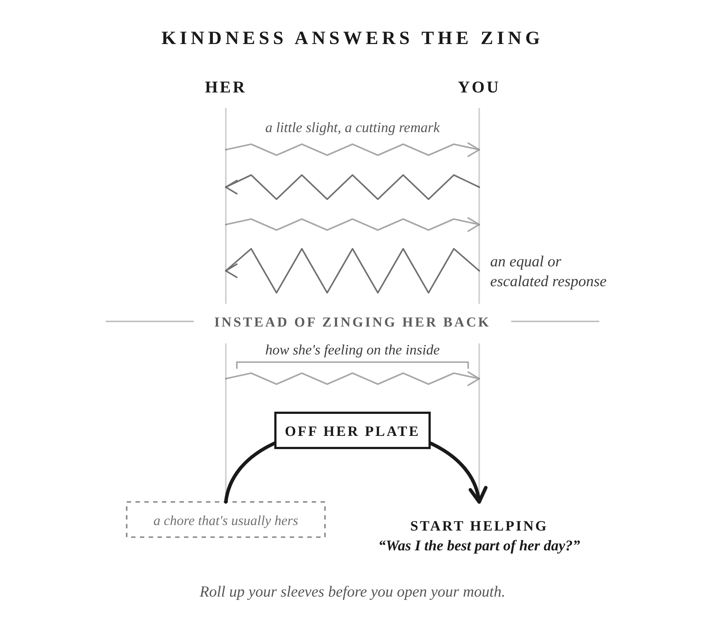

Your kindness usually slips first over something small. She says something with an edge about the things that need doing. You feel it land. You’re tired, and before you’ve decided anything, your answer is already in your mouth.
My family has a word for that kind of comment. We call it a zing, and there are so many in a day it’s hard to keep count. A zing is a little slight, a cutting remark. It’s a critique, only small.
I didn’t handle them well. Every little critique from her was met with an equal or escalated response. I had no patience, I didn’t let things go, I wasn’t kind.
Answering back made sense, the way most habits do: you use what rewards. I’d feel tired. I’d feel frustrated that immediately she was giving me things to do. Her words felt like she was calling me lazy.
You know that pull. You’re worn out, the comment stings, and answering it feels like the natural thing to do. What changed for me came slowly, through experience. I started asking who has the strength to de-escalate.
We have a saying in our house: “Never be the worst part of somebody’s day.” It’s a spot check, a way to make sure we’re not unkind. It’s also the reason not to send a zing back. A sharper answer is the quickest way to be the worst part of her day.
One kind of zing comes on Saturday mornings, on busy weekends. My wife wakes up with a jam-packed agenda for Saturday and Sunday to get a lot of things done. I’m tired and want to relax, or I’m just sitting down talking to the kids. She’s asking for the status of things that need to be done. And sometimes she’ll say something like, “We don’t have time to just lay around and not do stuff.” Or: “There’s an infinite amount of work to get done. Just look around. I shouldn’t have to tell you what to do.” You’ve probably heard your own version of those lines.
I used to take those lines personally. Over time I realized a line like that is more a verdict on how stressed and overworked she is.
When you hear a line like that, you can ask one of two different questions. The first is about you. If it sounds like she’s calling you lazy, ask yourself, “Is that truly the case?” If it is, fix it. If it isn’t, let the remark go.
The second question is about her: what does the remark tell you about how she feels? Most of the time, the remark says less about you than it seems. It’s an outward manifestation of how she’s feeling on the inside. Maybe she isn’t in a good mental state. Maybe she’s frustrated about something.
The same goes for everyone in your house. A child can have a temper tantrum because they’re hungry or tired. I don’t read that as a sign of their love for me, or of how I’m parenting.
One question sends you looking at yourself. The other lets you see a person who is struggling. Either way, you don’t have to be offended.
Answering every zing is checkers. Chess means keeping your eye on the long game.
In his study of anger, Seneca wrote: “Does a man get angry? Do you on the contrary challenge him with kindness. Animosity, if abandoned by one side, forthwith dies; it takes two to make a fight.” (De Ira II.34, Basore trans.) “Animosity” means bad feeling between people, and “forthwith” means at once. Seneca’s angry man could be anyone in your life, and Seneca’s advice is to answer anger with kindness. Seneca’s point is about the reply, and the reply is yours. A zing only turns into an exchange if you send one back.
So instead of giving in or zinging her back, I do two things. I roll up my sleeves and start helping. Then I give her a hug, tell her I see her, and take a little time to find out if I can make her day lighter.
A 2022 study by Gordon and colleagues looked at housework. People who did more of it, and felt the split was unfair, tended to be less satisfied in the relationship. The exception was people who felt appreciated by their partner. That study was about whoever does the housework, not about a husband who helps. I read it as a reason to do both: help her, and let her know you see her.
When I let the zings go and give her kindness instead, it has an incredible impact on changing the tone and the mood of the entire house. I would rather have a good night of happiness with my wife than try to answer each exchange. You get to decide which of those you’re after. I tell people, “Would you rather be right? Or would you rather be married?”
None of this is surrender. Letting a zing go doesn’t mean doing whatever she says. I learned that difference through experience, and it’s my own advice to myself.
Cruel remarks, from either of you, are a bigger problem than a zing, and letting them go isn’t the answer.
You can be home all weekend and still not be kind. As I see it, being kind is different than just being there. Being kind is when you need to show patience. You need to show understanding. It’s trying your best to make someone’s day better.
When she’s tired, you may be tired too. That’s two people who are equally tired. Kindness is what you choose to do anyway.
For me, kindness is a foot rub when she’s had a long day. It’s taking over a chore that’s usually hers. It’s letting her talk about her day, because it’s a kindness to let her speak and get things off her chest.
Why are those kind? They are acts of service, but that isn’t why they’re kind. It’s because these are normally things that she does, and I’m taking chores and work off of her plate. I’m doing something that shows I want to make her life better. You know which chores are usually hers in your house.
Your reason matters. Impett, Gable and Peplau (2005) found that small sacrifices made to please a partner went with better days than sacrifices made to avoid conflict. They studied dating couples, so applying the finding to a marriage is my reading. Helping to end the tension and helping to make her day better look the same from the outside. You know which one you’re doing.
Seneca’s work on giving and receiving is about friends and benefactors, the people who give help. His advice still fits a marriage: “Above all we should give willingly, quickly, and without any hesitation.” (De Beneficiis II.1, Stewart trans.) If you’re going to take something off her plate, take it gladly.
She deserves kindness every day, always, even when she’s at her lowest. You don’t wait for her to earn it.
Our saying has a second half: “You can be the best part of somebody’s day.”
In Book I of Meditations, the Roman emperor Marcus Aurelius lists what he learned from the people who shaped him. Sextus is one of them. Marcus wrote that Sextus “never showed anger or any other passion, but was entirely free from passion, and also most affectionate.” (Meditations I.9, Long trans.) The Greek behind “most affectionate” belongs to the word philostorgia, family love. “Free from passion” here means Sextus wasn’t ruled by anger or upset, and Marcus sets it right beside “most affectionate.” Sextus was calm and warm at once.
That pairing of calm and warm is what kindness looks like in your home. It shows up in the small friction of an ordinary day.
Compassion is part of kindness: you see her load, you act on it, and you stay steady yourself.
So ask yourself, each day: “Was I the best part of her day?”
For a long time I answered every zing. I should have been asking whether I was the best part of her day.
When the next zing lands, roll up your sleeves before you open your mouth.

Putting into Practice
Mechanism: Kindness answers the zing
The idea in one sentence: When your wife says something sharp, hear it as a sign of how she feels, help before you answer, and ask yourself whether you were the best part of her day.
A zing is a small, cutting remark. When you’re tired, answering it with a sharper one can feel natural, even reasonable. Seneca’s point is that it takes two to make a fight, so the reply is yours. A line like “I shouldn’t have to tell you what to do” usually says more about how stressed she is than about you. If the criticism is true, fix it. If it isn’t, let it go. Then roll up your sleeves, tell her you see her, and find out what would make her day lighter. Kindness is more than being home. It’s patience, understanding, and taking something that’s usually hers off her plate, gladly. Never be the worst part of her day, and aim to be the best part.
Lesson: Kindness is something you choose in your reply to a small, sharp comment, even when you’re tired too.
Challenge: The next time she says something sharp, start helping before you say a word, and later that day ask yourself whether you were the best part of her day.